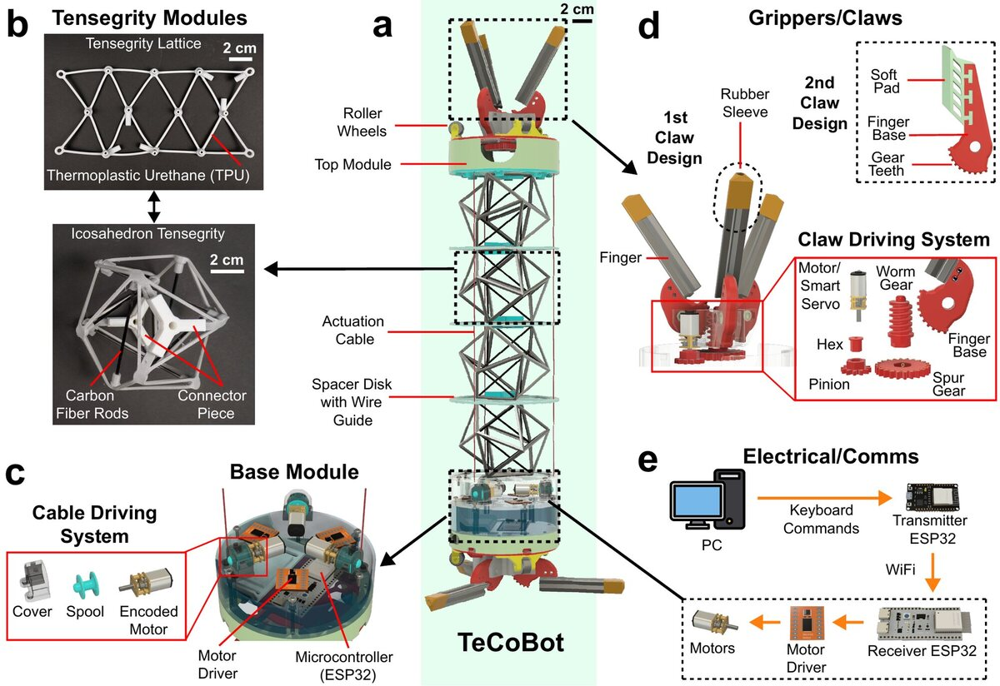
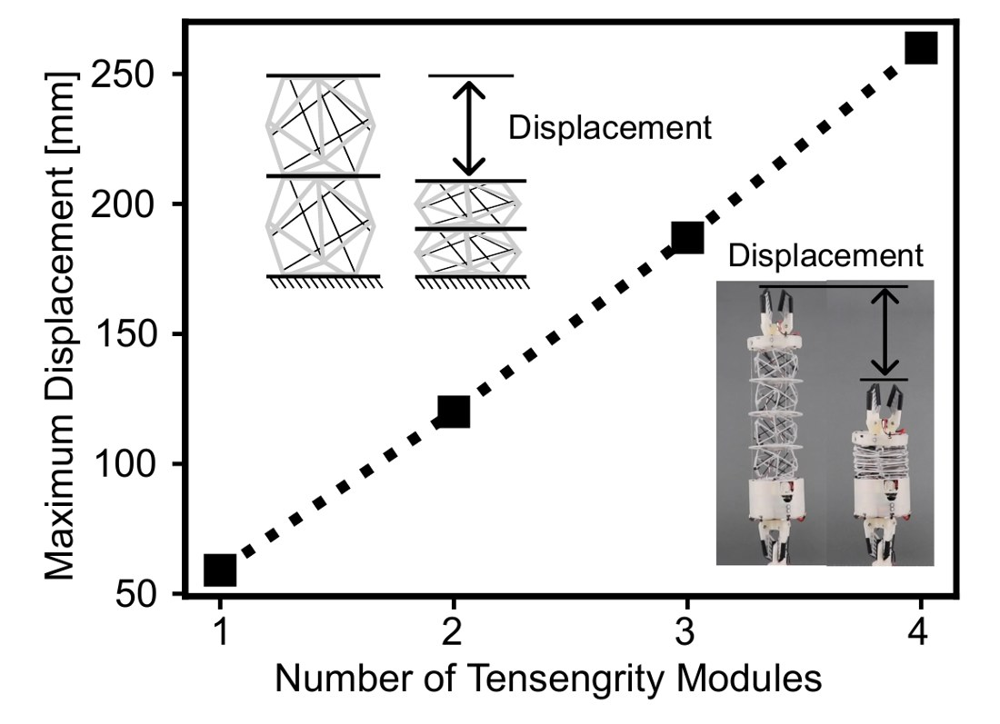
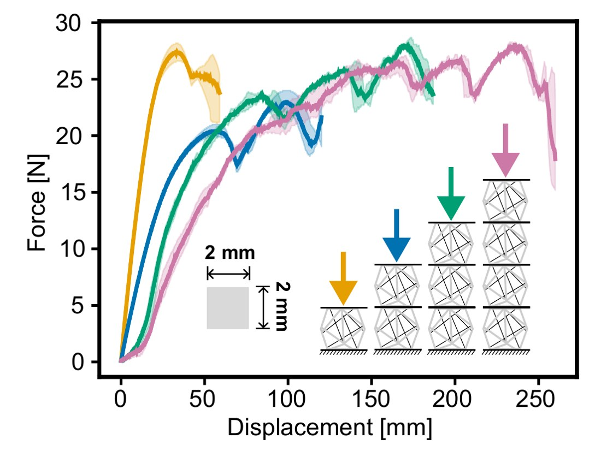
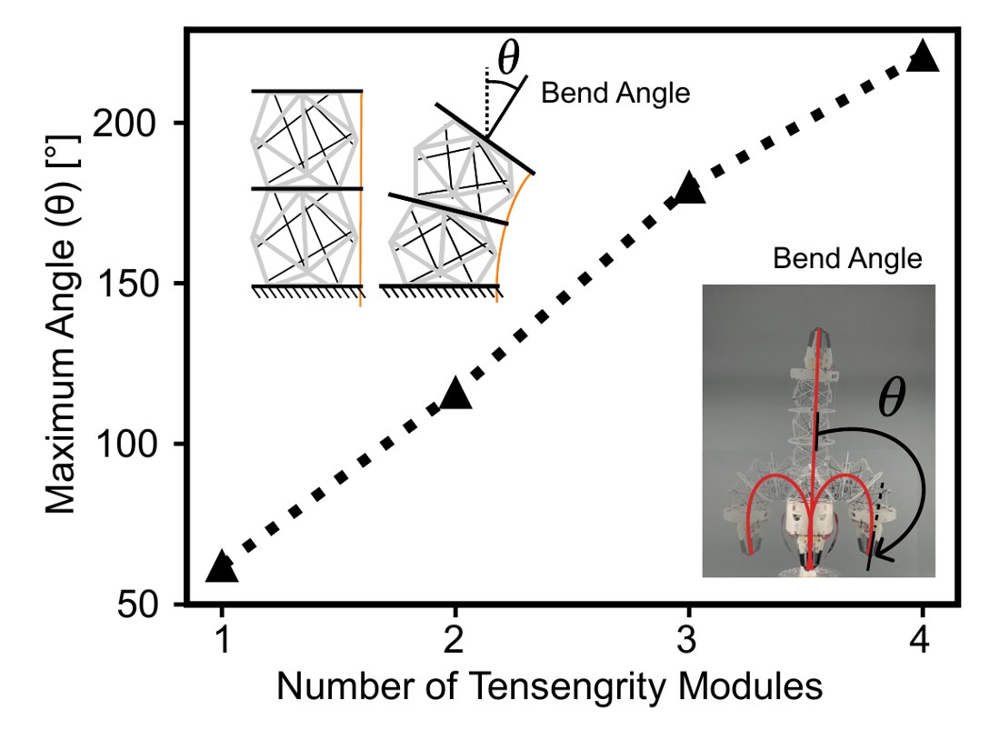
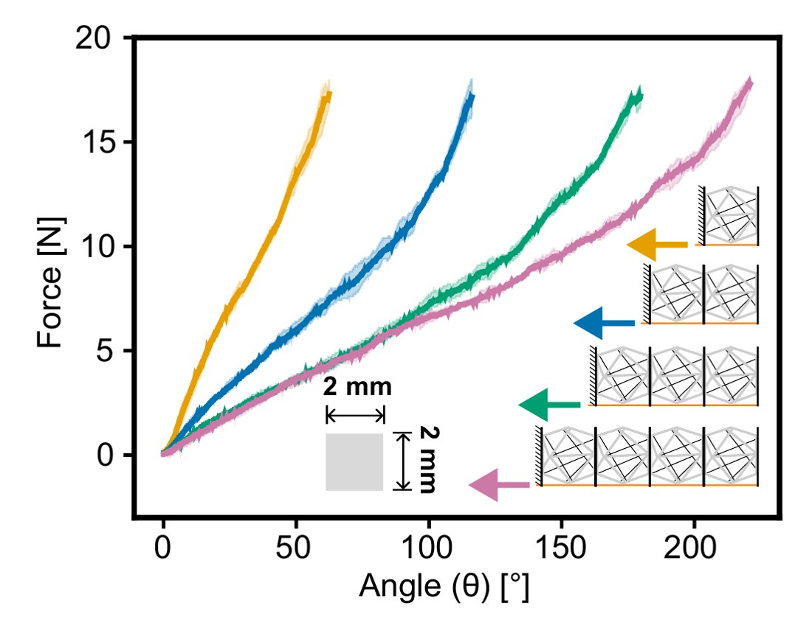
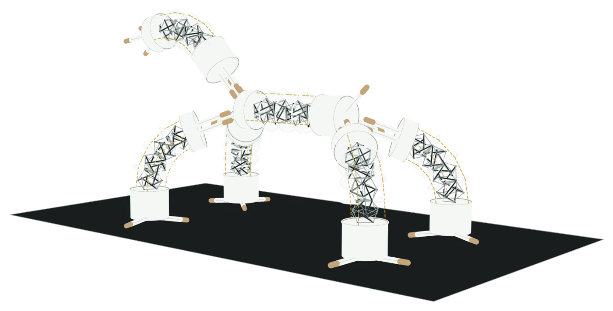

In under a minute
Three short reels of TeCoBots at work, alone and together (sped up).
Abstract
Robots that can change their morphologies and behaviors for different tasks and environments hold great promise for adaptable, multifunctional systems. Modular reconfigurable robots (MRRs) can achieve such functionalities by docking and rearranging individual units, but most rely on rigid modules that lack structural compliance, resulting in limited capabilities. Continuum robots offer compliance through flexible backbones, yet they cannot self-reconfigure into task-adaptive multi-robot configurations. Here, we introduce an MRR that unifies the advantages of both architectures by combining a tensegrity-based compliant body with claw-based connection mechanisms. Each robot can manipulate and locomote independently, and multiple robots can self-reconfigure into different morphologies (e.g., chains, loops, branches) for cooperative manipulation and locomotion. We demonstrate the robots’ capability across diverse tasks and environments, including coordinated object manipulation and transport, multimodal locomotion, and loco-manipulation in real-world scenarios. These results lay a foundation for adaptable and multifunctional robotic collectives, with broad potential applications in manufacturing, space exploration, and search-and-rescue operations.
What’s new
Three ideas behind TeCoBot. Open any of them for the details.

Most modular robots use rigid blocks: easy to connect, but limited in flexibility. Continuum robots can bend and deform, but typically operate as single units. TeCoBot brings these capabilities together.
A compliant body. Four stacked tensegrity modules each contain six carbon-fibre rods held together by a stretchable TPU tendon net. Three cables control bending in any direction, compression, and extension along the body’s length.
A claw at each end. Each claw works as both a gripper and a connector. The claws can be swapped to suit the task: rubber-sleeved claws for docking and moving, or soft-pad grippers for picking up delicate objects.
One robot or many. Each TeCoBot can move and manipulate objects independently. Multiple robots can dock into chains, loops, and branches while remaining compliant, allowing the connected group to bend and roll as a single body.
Collapsing


A single tensegrity module compresses by 60 mm, while a stack of four compresses by 260 mm—more than four times as far. The force–displacement plot shows the results for different numbers of tensegrity modules. Adding modules increases the compression distance, while the peak force remains around 23–28 N.
Bending


Bending follows a similar pattern. A single module bends by about 60°, while a stack of four reaches about 220°, curling back past the downward position (>180°). Adding modules increases the bending range, while the required force remains around 16–18 N.
Why it matters. Stacking more modules gives the robot a greater range of motion without needing larger motors at its base.
The claw is the only connector. Because the robots stay compliant after they join, a docked group can still bend, shorten, roll and climb as one body. With claw-to-claw docks alone, one robot can connect to as many as six others.
Three to three
Two closed claws interleave, every finger landing between two of the other’s, so the joint carries load like a continuous body.
42.9 Npeak holding force, latex sleevesSee it in PlayThree to one
One claw spreads open and another closes on a single finger. The bodies meet at an angle, which is how branches and Y-shapes form.
3-waya spread claw can take three robots at onceSee it in PlayClaw to body
A claw closes on another robot’s spacer disk or tendon lattice, attaching anywhere along its length instead of only at the ends.
29.8 Nholding force on the tensegrity, at 1 ASee it in PlayDocking without a human
In the paper, reconfiguration is teleoperated. As a proof of concept, a robot with a Raspberry Pi 5 and camera in its top module finds ArUco markers on another robot, corrects its heading with the cables, inches forward and closes its claw when the marker says it is in place.

Imagine
What it could become
Six robots as an elephant: one spine, four legs and a trunk, joined by the claws.
Try it in PlayOne robot
What a single TeCoBot can do: handle objects (manipulate), move six different ways, and roll across various terrain (sped up).
Manipulation
Six ways to move
Eight terrains tested
Rolling works best: it keeps going over loose, uneven ground like rocks and hay, and is fastest on smooth wood, at 30 mm/s.
Cooperative manipulation
Three robots on a frame can rearrange themselves into many layouts, each suited to a different job (sped up).
Cooperative locomotion
On the ground, robots link into chains, loops and branches to move in ways one robot cannot (sped up).
Real-world tasks
The robots climb, hand over, and carry objects, changing configurations between steps (sped up).
Videos
The full videos, with the playback speed noted for each.
Go further
Citation
@article{saikot2026tecobot,
title = {Tensegrity Continuum Robots Enable Task-Adaptive
Morphologies for Cooperative Behaviors},
author = {Saikot, Mahmud Hasan and Spiegel, S. and Kariyawasam, S. A.
and Stefka, A. and Chrisler, J. and Zhao, Jianguo},
journal = {arXiv preprint arXiv:2608.27221},
year = {2026}
}